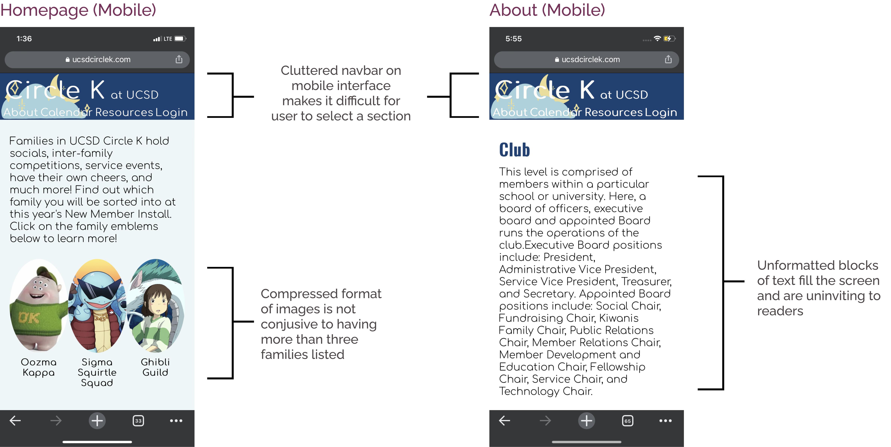

Project Type
Interface RedesignDuration
6 weeksRole
UI DesignTeam: Rachel Paner, Dave Vo, Shana Chen
Circle K International is the largest service organization in the world, with the UCSD chapter being one of nearly 550 chapters worldwide. The Tech Team is comprised of the UI Design Team, which is responsible for designing the CKI website, and Programming Team, which is responsible for implementing and maintaining the website.
Prior to joining the Tech Team, we were tasked with learning about Circle K through the current website on desktop and mobile, allowing us to take an objective look at the website and demonstrate how effectively it presents information to users who have no prior knowledge about the organization.
On the homepage, the minimal use of varied color and font size in text and the uniformity of the layout creates ineffective visual hierarchy
On the About page(s), the lack of images, lack of visual hierarchy, and the horizontal transition from header to body text that creates stacks of large text blocks deter users from reading the overwhelming amount of information
 With these critiques in mind, we wanted to figure out...How might we redesign the Circle K website in order to create a more organized and visually appealing layout in order to effectively present information and garner increased interest from prospective Circle K members?
So, we began sketching the to determine the layout, focusing on informational hierarchy. Our task was especially important because the styling used in the homepage would translate to the rest of the website, and would provide the first impression of the organization to new users.
Brainstorming on FigJam
Sketching the layout and interactions
After creating the homepage layout, we applied similar techniques to organize the copious amounts of information on the About pages. By establishing the tone for the homepage, we were able to apply a consistent style for the rest of our task pages.

About (Mobile)

This project was my first design experience in which I needed to listen to the wants and needs of a client organization in order to create a product that truly represented their message. This was also my formal introduction to designing mockups with Figma, which is one of the most valuable additions to my program skillset as an aspiring UI Designer.
In the future, when our redesign is implemented by the Programming sector of the Tech Team for the 2022-2023 school year, I would like to maintain the website and make any necessary iterations by soliciting user feedback from club members and interested students.
Thank you for reading